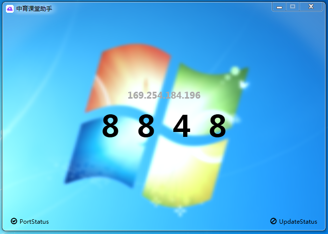

3.0 现已发布
现已支持 Aero/Mica 效果
注：Aero 仅在 Windows 7 可用，Mica 仅在 Windows 11 (Build 22523 及以上) 可用

连接密码检查
若在可访问域内存在相同的连接密码，程序将发出警告
SpecialChannels
现在可以通过 SpecialChannels 访问以下内容
在线的随机图片
本地的随机图片
对指定网页的截图
现在可以在线检查更新
从2.9.9.3起，可在程序启动时检查更新
2.9.9.9 是 3.0 的测试版